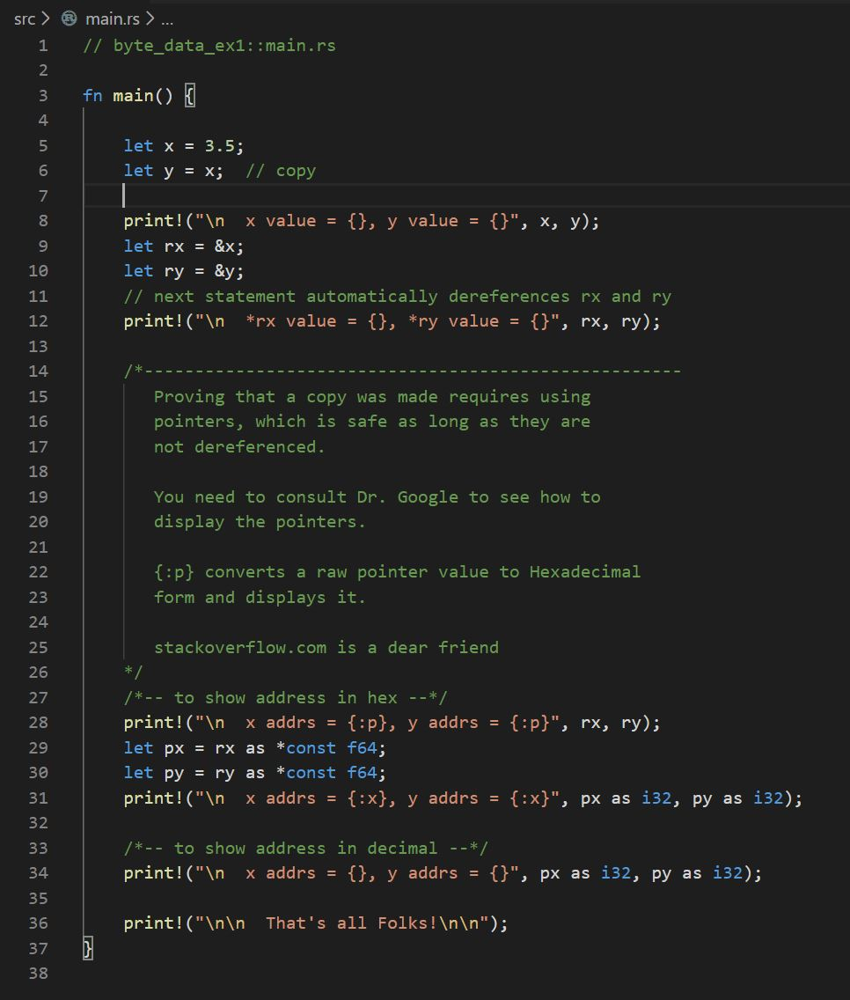
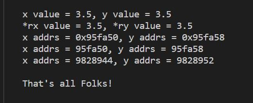

RustBites_Data.html
copyright © James Fawcett
Revised: 08/01/2026
copyright © James Fawcett
Revised: 08/01/2026
Rust Bite - Data Operations
bind, copy, borrow, move, clone, mutate
1. Our goal is to understand the terms:
| - | Bind: | Associate an identifier with a value |
| - | copy: | Bind to a copy of a blittable type's value. Compiler-generated code copies bytes from source to destination. Fast. |
| - | borrow: | Create a named reference (pointer with special syntax and semantics) to an identifier's location. Borrow pointers must satisfy Rust's ownership rules, covered in an upcoming Bite. Safe code can only dereference borrows. |
| - | Move: | Transfer ownership of a type's resources, usually implicitly. The compiler creates a destination pointer to the source's heap resources and invalidates the source instance. Fast. |
| - | Clone: | Create a copy of a non-blittable type. Program code invokes it. Slower than move. |
| - | mutate: | Change the value associated with a mutable identifier. |
2. Rust Types
A type defines a set of allowed values and the operations legal for that set.
| - | bool | |
| - | char (utf-8) | |
| - | integers: | i8, i16, i32, i64, isize, u8, u16, u32, u64, usize |
| - | floats: | f32, f64 |
| - | aggregates: | array: [T;N], slice: [T], str: literal string "....", tuple: (T1, T2, ...), struct { T1, T2, ... } |
| - | String | a stack-based object holding a collection of utf-8 chars in the heap |
| - | Vec<T> | very like a String, but holding a heap-based collection of an arbitrary type, T |
| - | VecDeque<T> | stack-based object holding a heap-based collection of T objects with efficient access to both front and back |
| - | Map<K, V>: | an associative container holding key-value pairs in the heap |
| - | ... |
3. Binding to a Value
Bind - associate an identifier with a memory location
- A type is a set of legal values with associated operations.
-
Every identifier has a type:
let creates a binding.
let k: i32 = 42;
i32 designates a 32-bit integer type. 42 is the value stored at k's memory location. -
Type inference:
This binding is legal and equivalent to the previous one. Without other information, Rust assigns type i32 to any unadorned integral value that fits a 32-bit location.
let k = 42;
4. Binding to an identifier
Binding to an identifier has several forms:
Both sides of a binding expression must share the same type. Rust does not implicitly
convert types.
-
let j:i32 = k; // makes copy for j because k is blittable -
let l = &k; // l makes a reference to k, called a borrow -
let s:String = "a string".to_string(); -
let t = s; // moves s into t, e.g., transfers ownership as s is not blittable
5. Assignment
x = y // copy if x and y are Copy types, y is valid after assignment t = s // move if s and t are Move types, s is invalid after assignment
6. Copy and Borrow
-
Copies happen implicitly when an identifier binds to a Copy type:
or when one Copy type is assigned to another:
let i = 3; let j = i; // copy j = i + 1; // copy -
Borrows arise when binding references to other identifiers:
A reference like
let r = &i // borrow; &i is a pointer to the memory location bound to i. Rust ownership rules govern references and forbid resetting them. A later Bite covers ownership.
7. Copy, Move, and Clone Traits
- A type must be blittable to qualify for the Copy trait.
-
The
str type represents immutable literal strings. Each lives in static memory for the program's lifetime. Code always accesses them through a reference, e.g.,s:&str = "a literal string" . The reference gets copied, as Figure 2 shows.
- Move types are non-blittable, with one exception.
- Adding the Drop trait creates a Move type, even for blittable types.
- When execution leaves a scope, all move types declared in that scope are dropped, returning their resources through Drop::drop(). This resembles a C++ destructor invocation.
- Types with the Clone trait provide a clone() member function. It creates a new instance with the same structure and copies of any resources held by the cloner.
- Examples of Clone types are the collections, e.g., Strings, Vecs, VecDeques, Maps, ...
8. Move and Clone
-
A move transfers a Move type's heap resources to another instance.
-
Figure 3 shows String
s moved tot with the statement:let t = s; // s is now invalid
- Move transfers ownership of resources.
-
Figure 3 shows String
-
A clone copies a Move type's heap resources into a new instance.
-
Figure 4 shows String
s cloned with the statement:let t = s.clone(); // s is still valid
- The clone operation copies resources to the target.
-
Figure 4 shows String
9. Mutation
Rust data is immutable by default - code cannot change it. Code opts in to mutation
with the mut qualifier.
Data mutability plays a central role in Rust's
ownership policies, which ensure memory safety.
-
Immutable data:
let i = 1;
// i += 1; won't compile -
Mutable data:
let mut j = 1;
j += 1; // compiles since j is mutable
10. Traits Preview:
| Trait | Applies to: | Examples | Consequences |
|---|---|---|---|
| Copy |
Single contiguous memory block ==> blittable |
ints, floats, aggregates of Copy types | Copies value from one memory location to another. Source valid after copy |
| "Move" |
non-contiguous block ==> not blittable |
Strings, Vecs, VecDeques, ... stack-based aggregates managing instances in the heap |
Transfers data ownership to another identifier. Source invalid after move Using a "Moved" variable causes a compile error. |
| Clone | most types | Structs, Strings, Vecs, VecDeques, ... | Copies resources to another identifier. Source valid after clone |
11. Formatting Data
12. Conclusions:
13. Exercises:
To build and run with cargo from the Visual Studio Code terminal, open VS Code in
the package folder - the folder containing the package's cargo.toml file.
-
Create an instance of a blittable type and show when it is copied.
- Can you prove that it was copied?
-
Create an instance of a non-blittable type and show when it is moved.
- Can you prove that it was moved?
- Can you show that the moved-from is invalid?
-
Repeat the second exercise but clone the non-blittable type instead
of moving it.
- Can you show that the cloner is still valid?
14. Solution for Exercise #1
Solution
Addresses are different, values are the same => copy. voila!
 |
 |
url
url